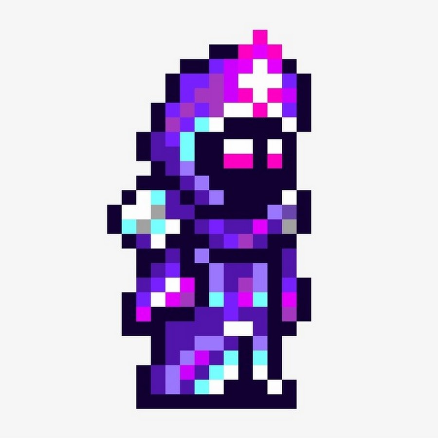
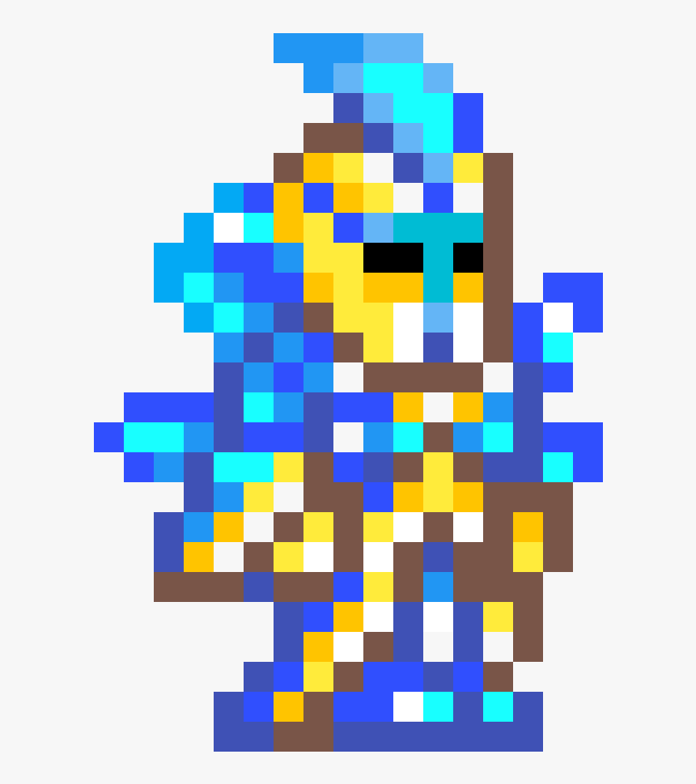
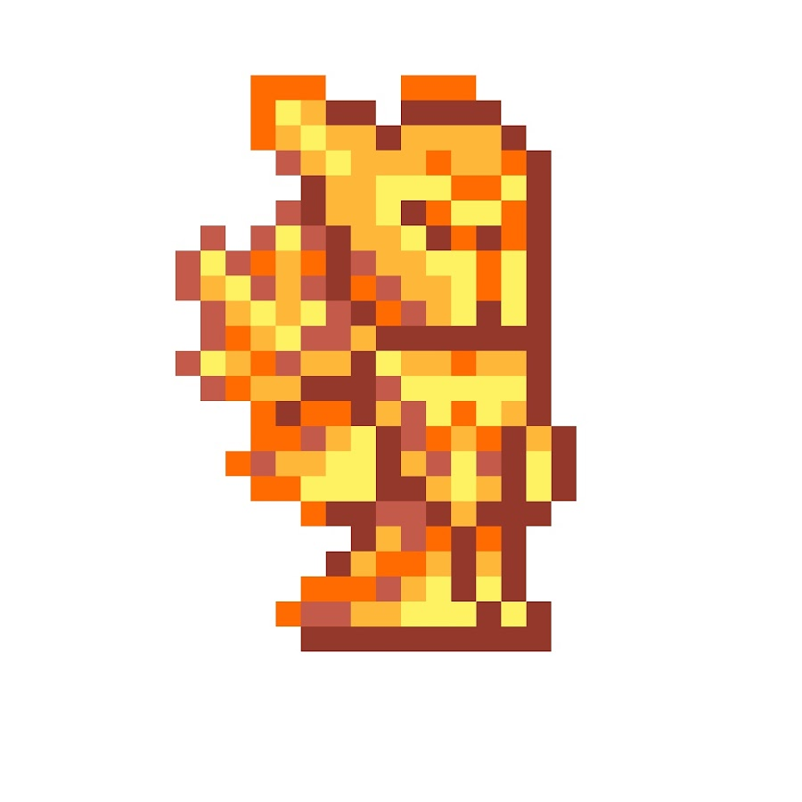
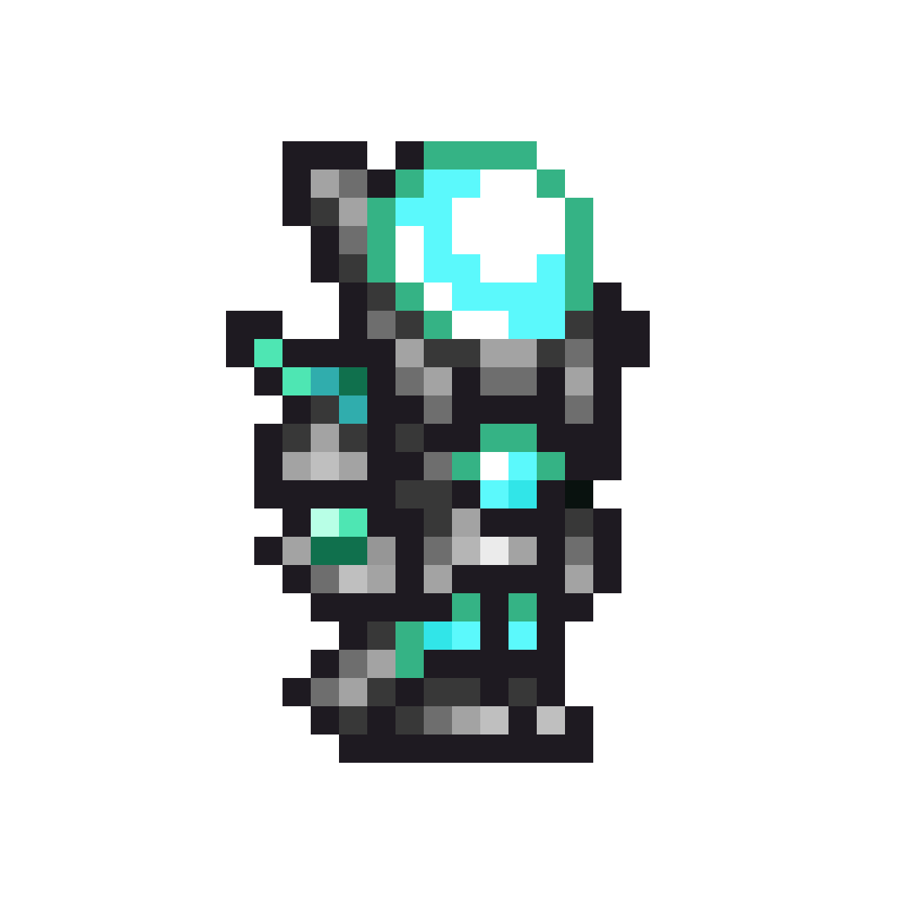

Я люблю играть в компьтерные игры.
Обо мне
Меня зовут Алексей Шелеметьев, мне 19 лет.
Я живу в городе Саранск вместе со своей семьей.
Я учусь в МГУ им. Н.П. Огарева на ФМиИТе.
Меня зовут Алексей Шелеметьев, мне 19 лет.
Я живу в городе Саранск вместе со своей семьей.
Я учусь в МГУ им. Н.П. Огарева на ФМиИТе.
Я люблю играть в компьтерные игры.

Маг обладает большим уроном, большой дистанцией атаки и слабой защитой. В качестве оружия использует посохи и книги заклинаний, для их использования потребляет ману.

Призыватель обладает самым большим уроном, средней дистанцией атаки и малой защитой. В качестве оружия использует посохи призыва и хлысты, для призыва существ тратит ману.

Воин обладает большим уроном, малой дистанцией атаки и самой большой защитой. Имеет самый большой арсенал оружия: мечи, копья, бумеранги, йо-йо.

Стрелок обладает средним уроном, большой дистанцией атаки и средней защитой. В качестве оружия использует луки и огнестрел.